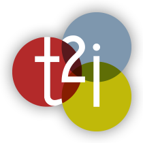
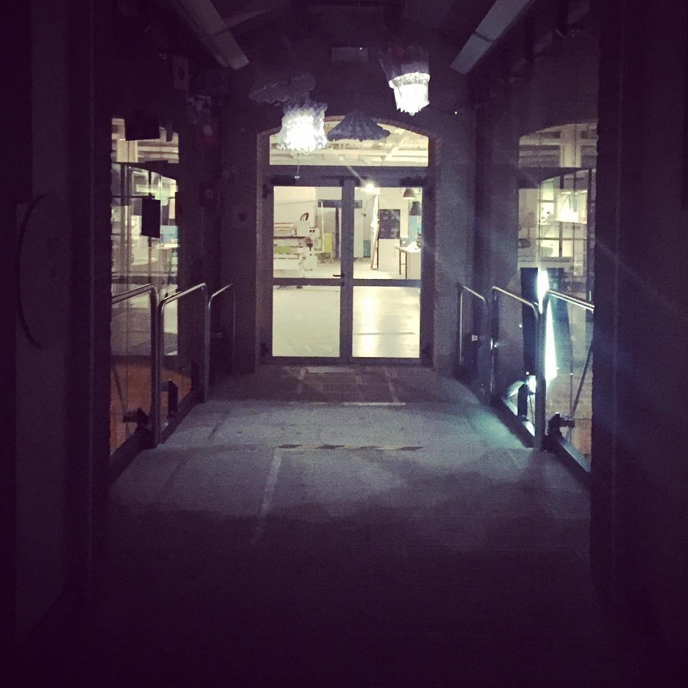

Il tuo browser non supporta le funzioni richieste da impress.js, quindi quello che vedrai è una presentazione semplificata.
Per la migliore esperienza possibile usa l'ultima versione dei browser Chrome, Safari o Firefox.
Startup in Italia
Pellegrini Michele - 5ES
I.I.S. De Amicis A.S. 2016/2017
gavel
lightbulb_outline
report_problem
check_circle
Legislazione
Incubatori
Problemi
Soluzioni
# Startup
## Che cosa sono?
* *Società di capitali* (anche in forma cooperativa)
* *Non quotate* in mercati regolamentati
* In possesso dei seguenti **requisiti**:
-----
1. costituite da **meno di 5 anni**;
2. hanno sede principale in **Italia**, o in altro Paese membro dell’**Unione Europea**, purché abbiano una sede produttiva o una filiale in Italia;
3. presentano un fatturato annuo **inferiore a 5 milioni di euro**;
4. non distribuiscono e non hanno distribuito utili;
5. **non quotate** su un mercato regolamentato, né su una piattaforma multilaterale di negoziazione;
6. hanno come oggetto sociale esclusivo o prevalente lo *sviluppo*, la *produzione* e la *commercializzazione* di prodotti o servizi innovativi ad **alto valore tecnologico**;
7. non sono costituite da *fusione*, *scissione* societaria o a seguito di *cessione* di azienda o di ramo di azienda;
-----
Inoltre devono soddisfare uno dei seguenti **criteri**:
1. **15%** del maggiore tra *fatturato* e *costi annui* dedicato ad attività di **R&S**;
2. **1/3** dello staff è *dottorando*/*ricercatore*, oppure i **2/3** possiedono *laurea magistrale*;
3. l'impresa è *titolare*, *depositaria* o *licenziataria* di un **brevetto** o **software** registrato.
-----
## Decreto Legge 179/2012
### aka "Decreto Passera" o "Decreto Crescita 2.0"
Promuove:
* crescita sostenibile
* sviluppo tecnologico
* innovazione
* occupazione
* talento e capitali esteri
Implementa **startup innovative**, **PMI innovative** e **incubatori certificati**
-----
# Benefici e agevolazioni
### (i più importanti)
* Costituzione **gratuita** con firma digitale
* **Esonero** dai diritti camerali e bollo
* Ripianamento perdite facilitato
* **Stock option** (remunerazione in quote capitale)
* Incentivi fiscali
* **Fail-fast**
-----
# Come si diventa "Startup innovativa"?
Si effettua la registrazione in due registri della Camera di Commercio:
* *classico* (per tutte le imprese)
* *speciale* (per startup e PMI innovative)
L'iscrizione è *gratuita* e *pubblica*, con controlli ex post
Qualche dato
Numero di imprese a Rovigo (circa)
40.000
Numero di startup a Rovigo (circa)
30
Numero di PMI innovative a Rovigo (circa)
3
Fonte: Camera di Commercio Venezia Rovigo Delta-Lagunare
# Incubatori certificati
### D.M. 22/12/2016 (agg. 22/02/2013)
**Strumenti** individuati dalla legge per valorizzare
le strutture che offrono efficacemente servizi fisici di
incubazione a nuove imprese innovative ad **alto valore
tecnologico**.
* Requisiti per locali, management e attrezzature
* Esperienza nell'attività di sostegno all'avvio di imprese
* Aiuto ai nuovi imprenditori

Trasferimento tecnologico e innovazione
Incubatore certificato a Rovigo (zona Censer)
- Registrazione brevetti e marchi
- Consulenza e aiuto fiscale
- Formazione e istruzione imprenditoriale
- Laboratorio marcatura CE
www.t2i.it
Come funziona?
- t²i aiuta l'imprenditore a registrare un eventuale brevetto
- redazione del BUSINESS PLAN
- BUSINESS MODEL: fattibilità dell'idea + eventuali correzioni
- fornitura di un microcredito (max. 25.000€)
- fornitura ufficio "tutto compreso" (circa 100€ affitto)
alarmmax 3 anni, ma dipende dal business
euro_symbolCamera di Commercio (regione Veneto) + Cassa di Risparmio Padova e Rovigo
Esempio di startup incubata: PopLab
Prototipazione e progettazione di prodotti attraverso la manifattura digitale, dal concept alla fabbricazione

- Locazione in zona Censer
- 500mq di laboratorio
- Vasta gamma di macchinari e formazione
poplab.cc
# Opportunità per il territorio
Nordest:
* *alto* concentramento industriale
* fornitori disponibili nei *paesi limitrofi*
* **"quello che serve è tutto qui"**
Città come per es. Rovigo:
* *bassa* concorrenza
* *alta* competenza
* nuove *tecnologie*, *idee*, *vantaggi fiscali*
placeholder
placeholder2